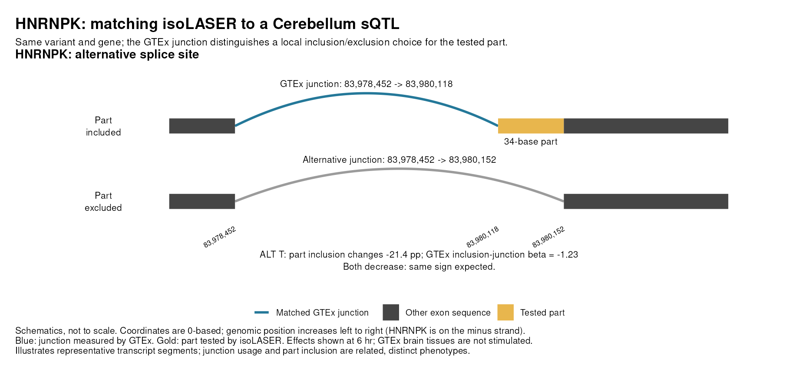
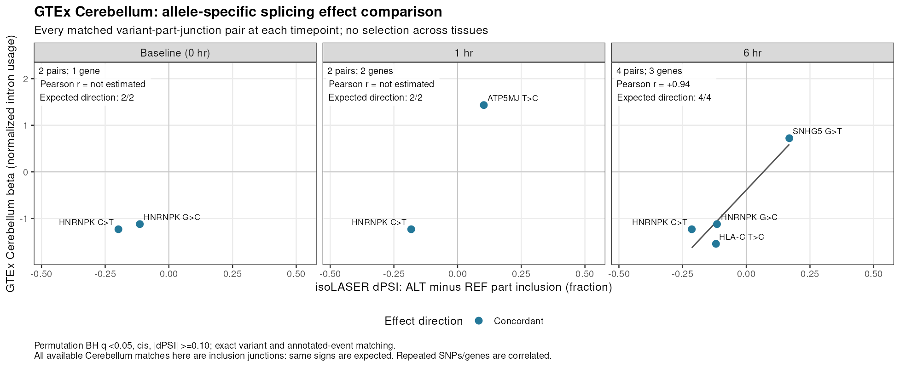
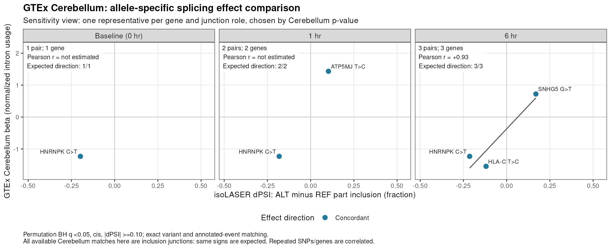

Last updated: 2026-10-14
Checks: 6 1
Knit directory: long_read_rna/
This reproducible R Markdown analysis was created with workflowr (version 1.7.0). The Checks tab describes the reproducibility checks that were applied when the results were created. The Past versions tab lists the development history.
The R Markdown is untracked by Git. To know which version of the R
Markdown file created these results, you’ll want to first commit it to
the Git repo. If you’re still working on the analysis, you can ignore
this warning. When you’re finished, you can run
wflow_publish to commit the R Markdown file and build the
HTML.
Great job! The global environment was empty. Objects defined in the global environment can affect the analysis in your R Markdown file in unknown ways. For reproduciblity it’s best to always run the code in an empty environment.
The command set.seed(20260908) was run prior to running
the code in the R Markdown file. Setting a seed ensures that any results
that rely on randomness, e.g. subsampling or permutations, are
reproducible.
Great job! Recording the operating system, R version, and package versions is critical for reproducibility.
Nice! There were no cached chunks for this analysis, so you can be confident that you successfully produced the results during this run.
Great job! Using relative paths to the files within your workflowr project makes it easier to run your code on other machines.
Great! You are using Git for version control. Tracking code development and connecting the code version to the results is critical for reproducibility.
The results in this page were generated with repository version a282ef5. See the Past versions tab to see a history of the changes made to the R Markdown and HTML files.
Note that you need to be careful to ensure that all relevant files for
the analysis have been committed to Git prior to generating the results
(you can use wflow_publish or
wflow_git_commit). workflowr only checks the R Markdown
file, but you know if there are other scripts or data files that it
depends on. Below is the status of the Git repository when the results
were generated:
Untracked files:
Untracked: analysis/isolaser_gtex_comparison.Rmd
Unstaged changes:
Modified: analysis/index.Rmd
Note that any generated files, e.g. HTML, png, CSS, etc., are not included in this status report because it is ok for generated content to have uncommitted changes.
There are no past versions. Publish this analysis with
wflow_publish() to start tracking its development.
We compared our permutation-adjusted allele-specific splicing results with significant GTEx v8 Cerebellum sQTLs. The tissue is fixed for every point; there is no selection across tissues. The aim follows the effect-size comparison in the right panel of Fig. 3e of the isoLASER paper.
Main finding: 5 distinct matched pairs in 4 genes, with 8 plotted comparisons across baseline, 1 hour and 6 hours. The genes are HNRNPK, ATP5MJ, HLA-C and SNHG5. All comparisons have the expected effect direction, but there are too few independent genes for a strong correlation or genome-wide validation conclusion.
An isoLASER association is a gene × variant × exonic part. A matched pair links that association to a GTEx junction for the same variant and gene. The same pair can be measured at more than one timepoint; a gene can contribute multiple pairs.
| Selection step | 0 hr | 1 hr | 6 hr | Unique across timepoints |
|---|---|---|---|---|
| Reported after permutation FDR and effect screen | 191 (64) | 183 (73) | 174 (74) | 375 (131) |
| Single-base variants eligible for matching | 188 (63) | 181 (71) | 168 (71) | 367 (127) |
| Same variant and gene in GTEx Cerebellum | 6 (3) | 21 (8) | 13 (7) | 30 (12) |
| Comparable annotated splice event | 2 (1) | 2 (2) | 4 (3) | 5 (4) |
Cells show isoLASER associations (genes). The last
column deduplicates gene–variant–part associations across timepoints; it
is not the sum of the timepoint columns. The input screen requires
permutation BH q < 0.05, isoLASER’s cis label and |dPSI|
≥ 0.10. BH is performed separately within each timepoint. Indels are
excluded from matching.
The same-variant/gene step contains 30 distinct variant–part associations from 14 gene–variant pairs; one variant can be tested against several parts. The event check leaves 5 associations, each with one comparable Cerebellum junction in the current results, hence 5 distinct matched pairs.
| Timepoint | Inclusion-junction pairs | Skipping-junction pairs | Plotted points | Distinct genes |
|---|---|---|---|---|
| 0 hr | 2 | 0 | 2 | 1 |
| 1 hr | 2 | 0 | 2 | 2 |
| 6 hr | 4 | 0 | 4 | 3 |
Five unique pairs give eight timepoint-specific points. All current Cerebellum matches are inclusion junctions; no skipping-junction match passes the current filters. These points are not independent signals: HNRNPK contributes two variants linked to the same part, with measurements at multiple timepoints.
Overlap alone is insufficient. GTEx tests intron/junction usage, while isoLASER tests inclusion of an exonic part. We require an annotated local relationship between the two measurements.
Coordinates are standardized before matching. isoLASER’s stored
variant position is 0-based; GTEx variant IDs are 1-based. For example,
chr9:83980154:C>T and chr9_83980155_C_T_b38
identify the same SNP. The GTEx intron’s right endpoint is reduced by
one to obtain a 0-based, half-open interval, following the LeafCutter
coordinate conversion. Main matches require exact endpoints. The
earlier 2-base sensitivity check did not add any selected matches.

Gold is the 34-base part chr9:[83980118,83980152); blue is the Cerebellum GTEx junction chr9:[83978452,83980118), which connects to the part. The alternative annotated junction ends at 83980152 and excludes it. The diagram is schematic, not to scale; its coordinates are 0-based.
For the same C>T variant at 6 hours, our ALT-minus-REF inclusion effect is -21.4 percentage points, and the Cerebellum inclusion-junction beta is -1.23. Both decrease, as expected for an inclusion junction.
SNHG5 also has an inclusion-junction match in Cerebellum: dPSI is +16.9 points and beta is +0.72. These fixed-tissue estimates replace the different tissue/junction choices in the earlier multi-tissue comparison.
The x-axis is our donor-normalized ALT minus REF part inclusion. The y-axis is GTEx’s ALT effect on normalized intron usage, from the GTEx sQTL pipeline. The axes have different units, so numerical equality is not expected. Inclusion junctions should have matching effect signs (positive correlation); skipping junctions would have opposite signs. All matches here are inclusion junctions, so only those panels are shown.
The Fig. 3e caption and methods describe comparing isoLASER effects with GTEx effects for matched variant–splicing associations, not a gene-level effect summary. A gene may contribute multiple associations. The linked public repository contains the processing workflows; we did not find figure-specific plotting code there, so its exact duplicate-removal rule remains unverified. Our primary plot therefore shows matched pairs, with a separate gene-representative sensitivity view. This is an adaptation of the paper: its displayed example is ovary, and its described comparison uses the longest skipping junction.

Each dot is one matched variant–part–junction pair at one timepoint. All 8 points are included; the gene count is reported separately in each panel. Point labels distinguish the two HNRNPK variants.

This supplementary view retains 6 points across panels, one representative per gene and junction role at each timepoint, selected by the Cerebellum p-value. It illustrates the influence of repeated variants in one gene.
All 8 of 8 comparisons agree in direction. At 6 hours, Pearson r = 0.94 and Spearman rho = 0.80, based on only 4 pairs in 3 genes. These are descriptive correlations and provide limited external corroboration. They do not validate the full scan or estimate its FDR. HNRNPK agrees at all three timepoints; HLA-C still warrants mapping checks.
AHI1, WDR45B and KPNA2 do not enter this comparable-event subset. An absent match does not disprove an association: we use GTEx significant pairs only, and adult Cerebellum differs from stimulated hiPSC-derived neurons. The event check is local and annotation-based; the available files do not establish the complete structure of every GTEx cluster.
All rows use Brain_Cerebellum. Variant positions are 1-based, while part and junction intervals are 0-based, half-open. dPSI is ALT minus REF inclusion, shown in percentage points.
Downloads: all matched pairs, selection counts, same-variant/gene matches before the event check, statistics, and input checksums.
Reproduce with
Rscript 10.isolaser_permutation/31.cerebellum_comparison.R,
then
Rscript 10.isolaser_permutation/29.gtex_comparable_examples.R --cerebellum.
The local output folder is
10.isolaser_permutation/out/adaptive/gtex_comparison/cerebellum/.
The earlier multi-tissue outputs remain in its parent folder.
R version 4.2.0 (2022-04-22)
Platform: x86_64-pc-linux-gnu (64-bit)
Running under: CentOS Linux 7 (Core)
Matrix products: default
BLAS/LAPACK: /software/openblas-0.3.13-el7-x86_64/lib/libopenblas_haswellp-r0.3.13.so
locale:
[1] C
attached base packages:
[1] stats graphics grDevices utils datasets methods base
other attached packages:
[1] DT_0.22 data.table_1.14.2
loaded via a namespace (and not attached):
[1] Rcpp_1.0.12 pillar_1.9.0 compiler_4.2.0 bslib_0.3.1
[5] later_1.3.0 jquerylib_0.1.4 git2r_0.30.1 highr_0.9
[9] workflowr_1.7.0 tools_4.2.0 digest_0.6.29 jsonlite_1.8.0
[13] evaluate_0.15 lifecycle_1.0.4 tibble_3.2.1 pkgconfig_2.0.3
[17] rlang_1.1.2 cli_3.6.1 rstudioapi_0.13 crosstalk_1.2.0
[21] yaml_2.3.5 xfun_0.41 fastmap_1.1.0 stringr_1.5.1
[25] knitr_1.39 fs_1.5.2 vctrs_0.6.5 sass_0.4.1
[29] htmlwidgets_1.5.4 rprojroot_2.0.3 glue_1.6.2 R6_2.5.1
[33] fansi_1.0.3 rmarkdown_2.25 magrittr_2.0.3 promises_1.2.0.1
[37] htmltools_0.5.2 httpuv_1.6.5 utf8_1.2.2 stringi_1.7.6